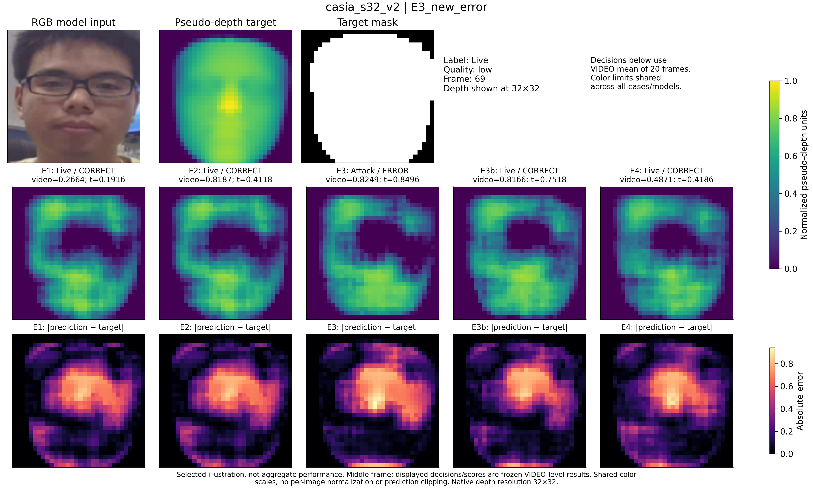

17_case_01_casia_s32_v2

Selected illustration, not aggregate performance. Middle frame; displayed decisions/scores are frozen VIDEO-level results. Shared color scales, no per-image normalization or prediction clipping. Native depth resolution 32×32.